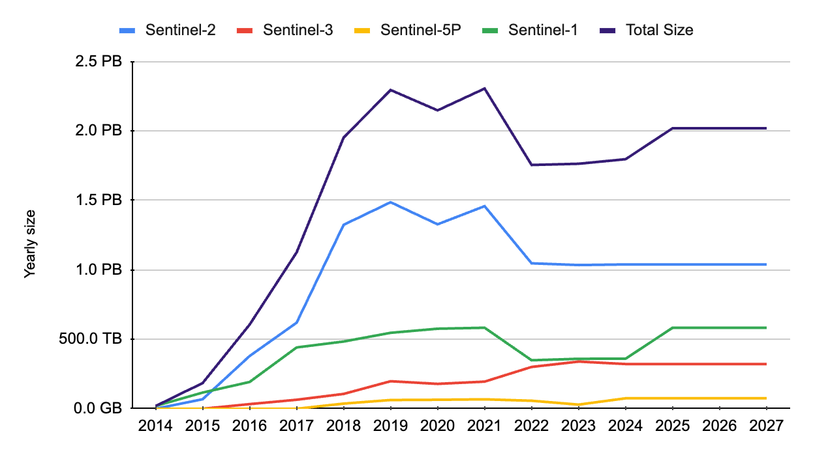
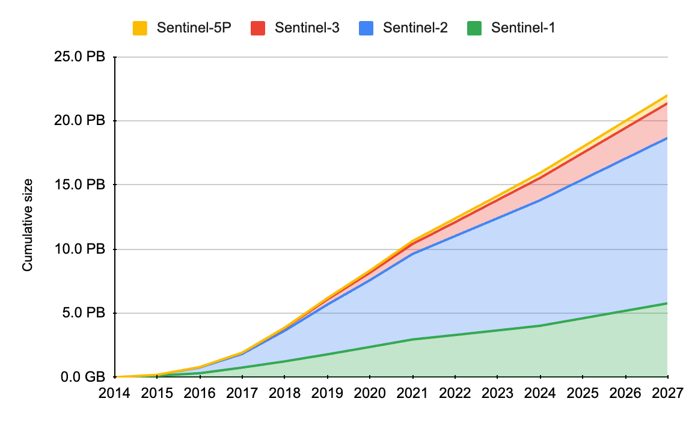

Data Hosting Requirements
Volúmenes de almacenamiento con cifras: 15,1 PB archivados sobre LAC a junio de 2024 y ~2 PB anuales de crecimiento desde 2025, con tabla por misión y gráficas de volumen anual y acumulado 2014-2027.
Data hosting is a component of the Platform, requiring storage solutions that can accommodate large volumes of EO data and ensure their access and management.
- Data Storage Capacity:
- The system must support scalable storage solutions capable of handling large volumes of Copernicus Sentinel data, including Sentinel-1, Sentinel-2, Sentinel-3, and Sentinel-5p mission data.
- Initial capacity must be sufficient to support the full archive over the LAC region. As of June 2024, the total volume of archived data over the Latin America and Caribbean (LAC) region has reached approximately 15.1 petabytes (PB). This includes data from 2014 to June 2024.
- From 2025 onwards, the system should be capable of accommodating an annual data increase of approximately 2 PB per year.
- Storage solutions must provide provisions for future expansion to accommodate this yearly increase.
- Data Management:
- Implement efficient data management practices to ensure data integrity, redundancy, and backup.
- Storage solutions should incorporate distributed storage technologies to enhance data availability and resilience.
- Data Access:
- Provide access to stored data for authorised users through a web-based portal and APIs.
- The system should support secure data access protocols and user authentication mechanisms.
- Data Ingestion:
- Ensure continuous ingestion of data with the Copernicus Data Space Ecosystem (CDSE) and other relevant data hubs to maintain data consistency and availability.
The following table reports the current and expected data volumes (from 2014 to 2027) for the Sentinel missions part of the baseline offer of the CopernicusLAC
Platform. These data volumes have determined the sizing of the platform’s storage capacity anticipated in the Data Storage Capacity bullet above.
| Satellites in operations | Year | Sentinel-1 | Sentinel-2 | Sentinel-3 | Sentinel-5P | Total | Cum. Tot. |
|---|---|---|---|---|---|---|---|
| S1A | 2014 | 19.9 TB | 0.0 GB | 0.0 GB | 0.0 GB | 19.9 TB | 19.9 TB |
| S1A, S2A | 2015 | 116.4 TB | 68.5 TB | 0.0 GB | 0.0 GB | 184.9 TB | 204.8 TB |
| S1A, S1B, S2A, S3A | 2016 | 192.8 TB | 379.7 TB | 33.5 TB | 0.0 GB | 605.9 TB | 810.7 TB |
| S1A, S1B, S2A, S2B, S3A, S5P | 2017 | 441.5 TB | 619.5 TB | 64.8 TB | 0.0 GB | 1.1 PB | 1.9 PB |
| S1A, S1B, S2A, S2B, S3A, S3B, S5P | 2018 | 484.1 TB | 1.3 PB | 106.9 TB | 37.1 TB | 2.0 PB | 3.9 PB |
| S1A, S1B, S2A, S2B, S3A, S3B, S5P | 2019 | 546.8 TB | 1.5 PB | 198.2 TB | 63.0 TB | 2.3 PB | 6.2 PB |
| S1A, S1B, S2A, S2B, S3A, S3B, S5P | 2020 | 576.4 TB | 1.3 PB | 179.2 TB | 64.8 TB | 2.1 PB | 8.3 PB |
| S1A, S1B, S2A, S2B, S3A, S3B, S5P | 2021 | 583.3 TB | 1.5 PB | 195.4 TB | 68.0 TB | 2.3 PB | 10.6 PB |
| S1A, S2A, S2B, S3A, S3B, S5P | 2022 | 349.2 TB | 1.0 PB | 301.1 TB | 57.7 TB | 1.8 PB | 12.4 PB |
| S1A, S2A, S2B, S3A, S3B, S5P | 2023 | 359.7 TB | 1.0 PB | 339.6 TB | 29.9 TB | 1.8 PB | 14.2 PB |
| S1A, S2A, S2B, S3A, S3B, S5P | 2024 | 360.4 TB | 1.0 PB | 322.1 TB | 75.2 TB | 1.8 PB | 16.0 PB |
| S1A, S1C, S2B, S2C, S3A, S3B, S5P | 2025 | 583.3 TB | 1.0 PB | 322.1 TB | 75.2 TB | 2.0 PB | 18.0 PB |
| S1A, S1C, S2B, S2C, S3A, S3B, S5P | 2026 | 583.3 TB | 1.0 PB | 322.1 TB | 75.2 TB | 2.0 PB | 20.0 PB |
| S1A, S1C, S2B, S2C, S3A, S3B, S5P | 2027 | 583.3 TB | 1.0 PB | 322.1 TB | 75.2 TB | 2.0 PB | 22.0 PB |
| 5.8 PB | 12.9 PB | 2.7 PB | 621.3 TB | 22.0 PB |
The following two graphs illustrate respectively the yearly and cumulative data volume trends for each satellite during the 2014 - 2027 period:

